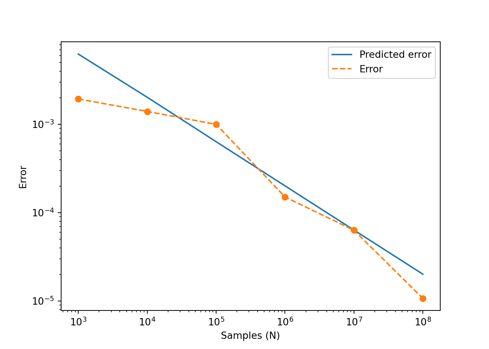

9 Monte Carlo methods
Monte Carlo methods are a family of computer algorithms that use randomness. The most well known applications include numerical integration (computing integrals that cannot be computed analytically) and generating draws from a probability distribution. Monte Carlo methos are simple, but inefficient. In other words, they are easy to understand and implement, even for problems that would be hard to solve with other methods, but they require long computational times.
9.1 Simple example: area of a circle
We would like to compute the area of a circle of radius \(r=1/2\), with centre at the \(c=(1/2,1/2)\). I know, we all know the formula for the area of the circle, but this is a toy example! We are going to think about it from a probability point of view. Consider the circle in the region \(D = [0,1]\times[0,1]\). If we sample a point randomly in the region \(D\), what is the probability of sampling a point inside the circle?

Intuitively, we expect to sample points inside the circle with a probability proportional to the area of the circle. More precisely, since the area of the region \(D\) is 1, if \(A\) is the area of the circle, we would expect to sample points inside the circle with probability \(A\)!
Now, we are interested in estimating this probability with the computer. To do so, we can just sample a large number \(N\) of points in the region \(D\), and we can count how many are inside the circle. This just requires a few lines of code:
R
r <- 0.5 #circle radius
C <- c(.5,.5) #Circle centre
N <- 10000 #N samples
#We sample x and y coordinates
x <- runif(N)
y <- runif(N)
#number of points inside circle
N_A <- sum( (x-C[1])^2 + (y-C[2])^2 <= r^2 )
#Probability of point in circle:
N_A/N## [1] 0.7883Python
import numpy as np
r = 0.5 #circle radius
C = np.array((.5,.5)) #Circle centre
N = 10000 #N samples
#We sample x and y coordinates
x = np.random.uniform(size=N)
y = np.random.uniform(size=N)
#number of points inside circle
N_A = sum( (x-C[0])**2 + (y-C[1])**2 <= r**2 )
#Probability of point in circle:
N_A/N## 0.7823A few comments regarding this algorithm:
The R and Python version give slightly different answers. This is not due to the language, but due to the randomness of the algorithm! Each time we run the algorithm, we sample randomly \(N\) points. For large \(N\), the result is close to the exact result (that is, in the limit \(N\to \infty\), \(N_A/N\) converges to the area of the circle.
The exact answer in this case is \(\pi/4 \approx 0.7853982\). The approximation with \(N=10000\) is correct only to one or two decimal positions. We would need a larger \(N\) to get a good approximation. For example, running the algorithm with \(N=10^8\) gives \(N_A/N = 0.785425\), which is just correct to the third decimal!
This highlights that the algorithm is slow, but it is simple. Note that the implementation did not require any advanced function, just being able to sample in a given region, and counting.
Note that this is just another look at the most basic method to estimate a probability: run the experiment many times, and count the proportions of successes.
9.1.1 A historical note
There are several algorithms named “Monte Carlo”. Numerical integration, or the approximating probabilities are among the more common ones (and note that in fact, they are two sides of the same problem!). The Monte Carlo method for numerical integration was invented in the 1940s, by a team of scientists working on nuclear weapons (if you have seen Oppenheimer, that same team of people, just about a year after). The name of the method comes from the casino in Monaco, a reference to the randomness.
9.2 Definition and properties
Because there are many algorithms with the same name, it is actually difficult to find a consensus definition of the Monte Carlo method. We are going to present here the definition in the context of numerical integration.
Let’s consider the following integral
\[ I = \int_A f(x)\mathrm{d}x, \] where $A ^m $, and \(f:\mathbb{R}^m\rightarrow \mathbb{R}\). Let \(V = \int_A \mathrm{d}x\) be the volume of \(A\).
Let \(x_1,\ldots,x_N\) be \(N\) independent, identically distributed samples from \(\mathrm{Unif}(A)\), the uniform distribution on the set \(A\). Then, the Monte Carlo estimator if \(I\) is given by \[ Q_N = V \frac{1}{N} \sum_{i=1}^N f(x_i). \] Note that the right hand side is the volume times the sample mean of \(f\).
9.2.1 Proof of convergence
The simplest proof that \(Q_N \rightarrow I\) as \(N\to\infty\) requires the law of large numbers. Intuitively, what we need to know is that the sample of \(f\) converges to its expected value \(\mathbb{E}(f)\). Now, the expected value of \(f\) under the uniform distribution on \(A\) is \[ \mathbb{E}(f) = \frac{1}{V}a \int_A f(x) \mathrm{d} x. \] Then, we have \[ Q_N \to V \mathbb{E}(f) = V \frac{1}{V} \int_A f(x) \mathrm{d} x = I. \]
9.3 Example
Let’s use Monte Carlo integration to estimate the following integral: \[ \int_0^1 e^{-x^2}. \] This is an example of integral that cannot be computed analytically, but it is simple to estimate with Monte Carlo integration!
R
f <- \(x) exp(-x^2)
N <- 100000 #N samples
#We sample x and y coordinates
x <- runif(N)
#number of points inside circle
Q_N <- mean(f(x))
Q_N## [1] 0.7460047Python
import numpy as np
f = lambda x: np.exp(-x**2)
N = 100000 #N samples
x = np.random.uniform(size=N)
Q_N = np.mean(f(x))
Q_N## 0.74641973217328569.4 Error estimate
Using a similar idea, we can study the error of the Monte Carlo estimation. Note that Monte Carlo algorithm is an stochastic algorithm, therefore every time we run we get different results, due to the different random samples. We can think about the error estimate as estimating the probability of getting an estimate in a certain range. More precisely, the variance of \(Q_N\) is \[ \mathrm{Var}(Q_N) = V^2 \frac{\sigma_N^2}{N}, \] where \(\sigma^2_N\) is the unbiased estimate of the variance of \(f\) with \(N\) samples, \[ \sigma^2_N = \frac{1}{N-1}\sum_{i=1}^N ( f(x_i) - \langle f \rangle )^2, \] where \(\langle f \rangle\) is the sample mean of \(f\).
Proof: We just need to apply the properties of the variance to the definition of \(Q_N\), \[ \mathrm{Var}(Q_N) = \frac{V^2}{N^2}\sum_{i=1}^N \mathrm{Var}(f) = V^2\frac{\mathrm{Var}(f)}{N}, \] and replacing \(\mathrm{Var}(f)\) by the unbiased estimate we obtain the result.
Notes:
- We can use the variance to construct a confidence interval for the estimates, using the standard Gaussian construction of condifence intervals, \(\mu \pm \sigma z_{1-\alpha}\). Let’s look at the previous example, \[ \int_0^1 e^{-x^2}. \]
R
f <- \(x) exp(-x^2)
N <- 100000 #N samples
#We sample x and y coordinates
x <- runif(N)
#number of points inside circle
Q_N <- mean(f(x))
#Note R uses unbiases var estimate
vf <- var(f(x))
#Estimate var
v <- vf / N
#Confidence interval .95
lb <- Q_N - sqrt(v)*qnorm(0.975)
ub <- Q_N + sqrt(v)*qnorm(0.975)
print(lb)## [1] 0.7457707print(Q_N)## [1] 0.7470177print(ub) ## [1] 0.7482647Python
import numpy as np
import scipy.stats as ss
f = lambda x: np.exp(-x**2)
N = 100000 #N samples
x = np.random.uniform(size=N)
Q_N = np.mean(f(x))
#Note ddof for unbiased!
vf = np.var(f(x),ddof=1)
#Estimate var
v = vf / N
#Confidence interval .95
lb = Q_N - np.sqrt(v)*ss.norm.ppf(.975)
ub = Q_N + np.sqrt(v)*ss.norm.ppf(.975)
print(lb)## 0.7452057383785574print(Q_N)## 0.7464501257232408print(ub) ## 0.7476945130679241In this case, we can use built-in functions of R/Python to get an alternative estimate of the integral, for comparison:
R
sqrt(pi)*(pnorm(sqrt(2))-pnorm(0))## [1] 0.7468241Python
np.sqrt(np.pi)*(ss.norm.cdf(np.sqrt(2))-ss.norm.cdf(0))## 0.7468241328124271Note that the true value is within the 95% confidence interval!
9.5 Asymptotic error
From the formula for the variance, we can see that the length of the confidence interval is proportional to \(1/\sqrt{N}\). Note that this explains the slow convergence of the method. We can visualise this by plotting the real error (if we know the exact value of the integral!) vs the number of iterations:

Here, the blue line is computed as \(V\sqrt{\sigma_N^2/N}\), and the error is computed as the absolute value of the difference between the “exact” value (using R/Python built-in functions) and the Monte Carlo approximation. Note that the scales are logarithmic in both axes, so the error, as a function of \(N\), becomes a straight line with slope \(-1/2\).
9.6 Exercises
9.6.1 Area of a circle
The first example can be re-written as an integral of a certain function on the domain \(D\) (hint: it is not a continuous function, think about a piecewise function related to a point being in the circle). Implement that function and use the previous example to compute a confidence interval when \(N=10^6\). This is a (very inefficient!) method to estimate \(\pi\).
9.6.2 More functions
Implement a function factory mc_factory(f,a,b) that creates a function mc(n) that performs Monte Carlo integration of \(f\) on the inverval \((a,b)\) using \(n\) samples. Implement a function factory mcv_factory(f,a,b) to obtain functions to compute the variance of the Monte Carlo integration of \(f\) on the interval \((a,b)\) using \(n\) samples.